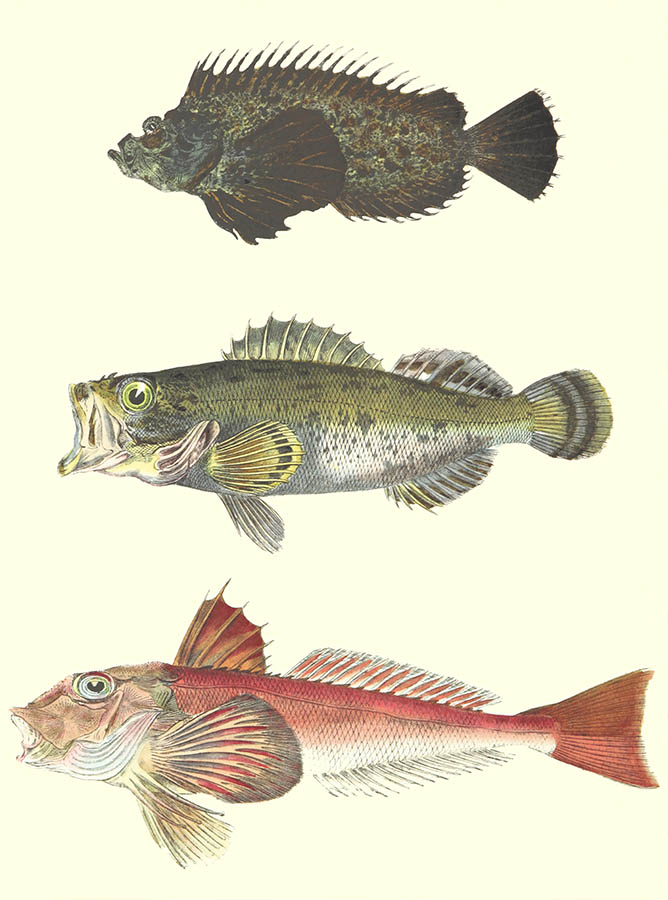

LIGHT FESTIVAL 2020
30 SIERPNIA - 7 PAŹDZIERNIKA
NOWE WYSTAWY
KOLORY AFRYKI
Wystawa zainspirowana została dalekimi wyprawami do środkowej Afryki.
Umieszczenie egzotycznych zwierząt na pierwszym planie, sugestywne i dynamiczne sceny, nacisk na prezencję bujnej flory to podstawowe cechy ukazanych dzieł.
Wpływ kultury Czarnego Lądu na kształt malarstwa europejskiego osiągnął apogeum w połowie XX wieku. Tingatinga – pochodzący z lat 60. XX w. styl malarski Tanzanii. Nazwa wywodzi się od nazwiska Edwarda Saidiego Tingatingi. Przedstawicieli tego nurtu inspirowała fauna Afryki Wschodniej, szczególnie tzw. wielka piątka: słoń, hipopotam, żyrafa, lew, antylopa i ptak. Pierwsze przedstawienia tych zwierząt przypominają wizerunki sztuki naskalnej. Przypuszcza się, że wpływ na twórczość Tingatingi mogły mieć piktogramy pozostawione przez ludność Sandawe i Hadza. Obrazy tingatinga w swojej prostocie nawiązują do tych przedstawień.
Szary Dzioborożec
James Garcia
Sowa Brązowa
Artistic Panda
Pyton Dywanowy
Helena Forde
Pyton Dywanowy
Helena Forde
Pyton Dywanowy
Helena Forde
Pyton Dywanowy
Helena Forde
Pyton Dywanowy
Helena Forde


ODLEGŁE KRAJOBRAZY
Malarstwo pejzażowe, zwane także sztuką pejzażową, to przedstawianie naturalnych scenerii, takich jak góry, doliny, drzewa, rzeki i lasy, zwłaszcza tam, gdzie głównym tematem jest szeroki widok - z jego elementami ułożonymi w spójną kompozycję. W innych pracach tła krajobrazowe dla postaci mogą nadal stanowić ważną część pracy. Niebo prawie zawsze jest uwzględnione w widoku, a często elementem kompozycji jest pogoda. Szczegółowe krajobrazy jako odrębny przedmiot nie występują we wszystkich tradycjach artystycznych i rozwijają się, gdy istnieje już wyrafinowana tradycja reprezentowania innych tematów. Malarstwo pejzażowe, zwane także sztuką pejzażową, to przedstawianie naturalnych scenerii, takich jak góry, doliny, drzewa, rzeki i lasy, zwłaszcza tam, gdzie głównym tematem jest szeroki widok - z jego elementami ułożonymi w spójną kompozycję. W innych pracach tła krajobrazowe dla postaci mogą nadal stanowić ważną część pracy. Niebo prawie zawsze jest uwzględnione w widoku, a często elementem kompozycji jest pogoda. Szczegółowe krajobrazy jako odrębny przedmiot nie występują we wszystkich tradycjach artystycznych i rozwijają się, gdy istnieje już wyrafinowana tradycja reprezentowania innych tematów. Dwie główne tradycje wywodzą się z malarstwa zachodniego i sztuki chińskiej, które w obu przypadkach sięgają ponad tysiąc lat wstecz. Rozpoznanie elementu duchowego w sztuce krajobrazu jest obecne od jej początków w sztuce wschodnioazjatyckiej, czerpiącej z taoizmu i innych tradycji filozoficznych, ale na Zachodzie ujawnia się dopiero w romantyzmie. Poglądy krajobrazowe w sztuce mogą być całkowicie wyimaginowane lub skopiowane z rzeczywistości z różnym stopniem dokładności. Jeśli głównym celem zdjęcia jest przedstawienie rzeczywistego, konkretnego miejsca, w szczególności w widocznym miejscu, w szczególności budynków, nazywa się to widokiem topograficznym. Takie poglądy, niezwykle powszechne jako grafiki na Zachodzie, są często postrzegane jako gorsze od krajobrazów artystycznych, chociaż to rozróżnienie nie zawsze jest znaczące; podobne uprzedzenia istniały w sztuce chińskiej, gdzie malarstwo literackie zwykle przedstawiało wyimaginowane poglądy, podczas gdy profesjonalni artyści malowali prawdziwe widoki.

CZARUJĄCE PORTRETY
Malarstwo portretowe to gatunek w malarstwie, którego intencją jest przedstawienie określonego ludzkiego podmiotu. Termin „malarstwo portretowe” może również opisać faktycznie namalowany portret. Portreciści mogą tworzyć swoje prace na zamówienie, dla osób publicznych i prywatnych lub inspirować się podziwem lub przywiązaniem do tematu. Portrety często służą jako ważne dokumenty państwowe i rodzinne, a także pamiątki. Historycznie, portrety upamiętniają przede wszystkim bogatych i wpływowych. Z biegiem czasu jednak stało się powszechne, że klienci z klasy średniej zamawiali portrety swoich rodzin i współpracowników. Dziś portrety są nadal zamawiane przez rządy, korporacje, grupy, kluby i osoby prywatne. Oprócz malarstwa portrety można wykonywać również w innych mediach, takich jak odbitki (w tym akwaforta i litografia), fotografia, wideo i media cyfrowe. Wydawać by się mogło oczywiste, że namalowany portret ma na celu uzyskanie podobizny siedzącej, która jest rozpoznawalna dla tych, którzy go widzieli, a najlepiej jest bardzo dobrym zapisem ich wyglądu. W rzeczywistości koncepcja ta rozwijała się powoli i minęły wieki, zanim artyści z różnych tradycji nabyli odrębne umiejętności malowania dobrego podobieństwa.
Portret młodej kobiety
Jance McAllen

Daniel Craig
Françoise Nielly
Witness
Isabella Moravetz
Natalie
James Connor